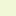

<!doctype html>
<html lang="en">
    <head>
        <meta charset="utf-8">
        <meta http-equiv="X-UA-Compatible" content="IE=edge">
        <meta name="viewport" content="initial-scale=1,user-scalable=no,maximum-scale=1,width=device-width">
        <meta name="mobile-web-app-capable" content="yes">
        <meta name="apple-mobile-web-app-capable" content="yes">
        <link rel="stylesheet" href="css/leaflet.css">
        <link rel="stylesheet" href="css/L.Control.Layers.Tree.css">
        <link rel="stylesheet" href="css/L.Control.Locate.min.css">
        <link rel="stylesheet" href="css/qgis2web.css">
        <link rel="stylesheet" href="css/fontawesome-all.min.css">
        <link rel="stylesheet" href="css/leaflet-search.css">
        <link rel="stylesheet" href="css/leaflet-control-geocoder.Geocoder.css">
        <link rel="stylesheet" href="css/leaflet-measure.css">
        <style>
        html, body, #map {
            width: 100%;
            height: 100%;
            padding: 0;
            margin: 0;
        }
        </style>
        <title></title>
    </head>
    <body>
        <div id="map">
        </div>
        <script src="js/qgis2web_expressions.js"></script>
        <script src="js/leaflet.js"></script>
        <script src="js/L.Control.Layers.Tree.min.js"></script>
        <script src="js/L.Control.Locate.min.js"></script>
        <script src="js/leaflet.rotatedMarker.js"></script>
        <script src="js/leaflet.pattern.js"></script>
        <script src="js/leaflet-hash.js"></script>
        <script src="js/Autolinker.min.js"></script>
        <script src="js/rbush.min.js"></script>
        <script src="js/labelgun.min.js"></script>
        <script src="js/labels.js"></script>
        <script src="js/leaflet-control-geocoder.Geocoder.js"></script>
        <script src="js/leaflet-measure.js"></script>
        <script src="js/leaflet-search.js"></script>
        <script src="data/Temp_ClippedDegreesCelsius_2.js"></script>
        <script src="data/NDVI_ClippedVegetationIndexunitless_3.js"></script>
        <script>
        var highlightLayer;
        function highlightFeature(e) {
            highlightLayer = e.target;

            if (e.target.feature.geometry.type === 'LineString' || e.target.feature.geometry.type === 'MultiLineString') {
              highlightLayer.setStyle({
                color: '#ffff00',
              });
            } else {
              highlightLayer.setStyle({
                fillColor: '#ffff00',
                fillOpacity: 1
              });
            }
            highlightLayer.openPopup();
        }
        var map = L.map('map', {
            zoomControl:false, maxZoom:28, minZoom:1
        }).fitBounds([[40.39043264795135,-3.738904036381874],[40.442458231606615,-3.6576369068782153]]);
        var hash = new L.Hash(map);
        map.attributionControl.setPrefix('<a href="https://github.com/tomchadwin/qgis2web" target="_blank">qgis2web</a> &middot; <a href="https://leafletjs.com" title="A JS library for interactive maps">Leaflet</a> &middot; <a href="https://qgis.org">QGIS</a>');
        var autolinker = new Autolinker({truncate: {length: 30, location: 'smart'}});
        // remove popup's row if "visible-with-data"
        function removeEmptyRowsFromPopupContent(content, feature) {
         var tempDiv = document.createElement('div');
         tempDiv.innerHTML = content;
         var rows = tempDiv.querySelectorAll('tr');
         for (var i = 0; i < rows.length; i++) {
             var td = rows[i].querySelector('td.visible-with-data');
             var key = td ? td.id : '';
             if (td && td.classList.contains('visible-with-data') && feature.properties[key] == null) {
                 rows[i].parentNode.removeChild(rows[i]);
             }
         }
         return tempDiv.innerHTML;
        }
        // add class to format popup if it contains media
		function addClassToPopupIfMedia(content, popup) {
			var tempDiv = document.createElement('div');
			tempDiv.innerHTML = content;
			if (tempDiv.querySelector('td img')) {
				popup._contentNode.classList.add('media');
					// Delay to force the redraw
					setTimeout(function() {
						popup.update();
					}, 10);
			} else {
				popup._contentNode.classList.remove('media');
			}
		}
        var zoomControl = L.control.zoom({
            position: 'topleft'
        }).addTo(map);
        L.control.locate({locateOptions: {maxZoom: 19}}).addTo(map);
        var measureControl = new L.Control.Measure({
            position: 'topleft',
            primaryLengthUnit: 'meters',
            secondaryLengthUnit: 'kilometers',
            primaryAreaUnit: 'sqmeters',
            secondaryAreaUnit: 'hectares'
        });
        measureControl.addTo(map);
        document.getElementsByClassName('leaflet-control-measure-toggle')[0].innerHTML = '';
        document.getElementsByClassName('leaflet-control-measure-toggle')[0].className += ' fas fa-ruler';
        var bounds_group = new L.featureGroup([]);
        function setBounds() {
        }
        map.createPane('pane_OpenStreetMap_0');
        map.getPane('pane_OpenStreetMap_0').style.zIndex = 400;
        var layer_OpenStreetMap_0 = L.tileLayer('https://tile.openstreetmap.org/{z}/{x}/{y}.png', {
            pane: 'pane_OpenStreetMap_0',
            opacity: 1.0,
            attribution: '',
            minZoom: 1,
            maxZoom: 28,
            minNativeZoom: 0,
            maxNativeZoom: 19
        });
        layer_OpenStreetMap_0;
        map.addLayer(layer_OpenStreetMap_0);
        map.createPane('pane_RGB_Clipped_1');
        map.getPane('pane_RGB_Clipped_1').style.zIndex = 401;
        var img_RGB_Clipped_1 = 'data/RGB_Clipped_1.png';
        var img_bounds_RGB_Clipped_1 = [[40.40094330043268,-3.736969104727025],[40.43194757912529,-3.6595718385330644]];
        var layer_RGB_Clipped_1 = new L.imageOverlay(img_RGB_Clipped_1,
                                              img_bounds_RGB_Clipped_1,
                                              {pane: 'pane_RGB_Clipped_1'});
        bounds_group.addLayer(layer_RGB_Clipped_1);
        map.addLayer(layer_RGB_Clipped_1);
        function pop_Temp_ClippedDegreesCelsius_2(feature, layer) {
            layer.on({
                mouseout: function(e) {
                    for (var i in e.target._eventParents) {
                        if (typeof e.target._eventParents[i].resetStyle === 'function') {
                            e.target._eventParents[i].resetStyle(e.target);
                        }
                    }
                    if (typeof layer.closePopup == 'function') {
                        layer.closePopup();
                    } else {
                        layer.eachLayer(function(feature){
                            feature.closePopup()
                        });
                    }
                },
                mouseover: highlightFeature,
            });
            var popupContent = '<table>\
                    <tr>\
                        <td class="visible-with-data" id="Temp_Clipp" colspan="2"><strong>Temp_Clipp</strong><br />' + (feature.properties['Temp_Clipp'] !== null ? autolinker.link(String(feature.properties['Temp_Clipp']).replace(/'/g, '\'').toLocaleString()) : '') + '</td>\
                    </tr>\
                </table>';
            var content = removeEmptyRowsFromPopupContent(popupContent, feature);
			layer.on('popupopen', function(e) {
				addClassToPopupIfMedia(content, e.popup);
			});
			layer.bindPopup(content, { maxHeight: 400 });
        }

        function style_Temp_ClippedDegreesCelsius_2_0(feature) {
            if (feature.properties['Temp_Clipp'] >= 29.000000 && feature.properties['Temp_Clipp'] <= 34.000000 ) {
                return {
                pane: 'pane_Temp_ClippedDegreesCelsius_2',
                stroke: false, 
                fill: true,
                fillOpacity: 1,
                fillColor: 'rgba(44,123,182,1.0)',
                interactive: false,
            }
            }
            if (feature.properties['Temp_Clipp'] >= 34.000000 && feature.properties['Temp_Clipp'] <= 35.000000 ) {
                return {
                pane: 'pane_Temp_ClippedDegreesCelsius_2',
                stroke: false, 
                fill: true,
                fillOpacity: 1,
                fillColor: 'rgba(100,165,205,1.0)',
                interactive: false,
            }
            }
            if (feature.properties['Temp_Clipp'] >= 35.000000 && feature.properties['Temp_Clipp'] <= 36.000000 ) {
                return {
                pane: 'pane_Temp_ClippedDegreesCelsius_2',
                stroke: false, 
                fill: true,
                fillOpacity: 1,
                fillColor: 'rgba(157,207,227,1.0)',
                interactive: false,
            }
            }
            if (feature.properties['Temp_Clipp'] >= 36.000000 && feature.properties['Temp_Clipp'] <= 36.000000 ) {
                return {
                pane: 'pane_Temp_ClippedDegreesCelsius_2',
                stroke: false, 
                fill: true,
                fillOpacity: 1,
                fillColor: 'rgba(199,230,219,1.0)',
                interactive: false,
            }
            }
            if (feature.properties['Temp_Clipp'] >= 36.000000 && feature.properties['Temp_Clipp'] <= 37.000000 ) {
                return {
                pane: 'pane_Temp_ClippedDegreesCelsius_2',
                stroke: false, 
                fill: true,
                fillOpacity: 1,
                fillColor: 'rgba(236,247,200,1.0)',
                interactive: false,
            }
            }
            if (feature.properties['Temp_Clipp'] >= 37.000000 && feature.properties['Temp_Clipp'] <= 38.000000 ) {
                return {
                pane: 'pane_Temp_ClippedDegreesCelsius_2',
                stroke: false, 
                fill: true,
                fillOpacity: 1,
                fillColor: 'rgba(255,237,170,1.0)',
                interactive: false,
            }
            }
            if (feature.properties['Temp_Clipp'] >= 38.000000 && feature.properties['Temp_Clipp'] <= 38.000000 ) {
                return {
                pane: 'pane_Temp_ClippedDegreesCelsius_2',
                stroke: false, 
                fill: true,
                fillOpacity: 1,
                fillColor: 'rgba(254,201,128,1.0)',
                interactive: false,
            }
            }
            if (feature.properties['Temp_Clipp'] >= 38.000000 && feature.properties['Temp_Clipp'] <= 39.000000 ) {
                return {
                pane: 'pane_Temp_ClippedDegreesCelsius_2',
                stroke: false, 
                fill: true,
                fillOpacity: 1,
                fillColor: 'rgba(249,157,89,1.0)',
                interactive: false,
            }
            }
            if (feature.properties['Temp_Clipp'] >= 39.000000 && feature.properties['Temp_Clipp'] <= 40.000000 ) {
                return {
                pane: 'pane_Temp_ClippedDegreesCelsius_2',
                stroke: false, 
                fill: true,
                fillOpacity: 1,
                fillColor: 'rgba(232,91,59,1.0)',
                interactive: false,
            }
            }
            if (feature.properties['Temp_Clipp'] >= 40.000000 && feature.properties['Temp_Clipp'] <= 44.000000 ) {
                return {
                pane: 'pane_Temp_ClippedDegreesCelsius_2',
                stroke: false, 
                fill: true,
                fillOpacity: 1,
                fillColor: 'rgba(215,25,28,1.0)',
                interactive: false,
            }
            }
        }
        map.createPane('pane_Temp_ClippedDegreesCelsius_2');
        map.getPane('pane_Temp_ClippedDegreesCelsius_2').style.zIndex = 402;
        map.getPane('pane_Temp_ClippedDegreesCelsius_2').style['mix-blend-mode'] = 'normal';
        var layer_Temp_ClippedDegreesCelsius_2 = new L.geoJson(json_Temp_ClippedDegreesCelsius_2, {
            attribution: '',
            interactive: false,
            dataVar: 'json_Temp_ClippedDegreesCelsius_2',
            layerName: 'layer_Temp_ClippedDegreesCelsius_2',
            pane: 'pane_Temp_ClippedDegreesCelsius_2',
            onEachFeature: pop_Temp_ClippedDegreesCelsius_2,
            style: style_Temp_ClippedDegreesCelsius_2_0,
        });
        bounds_group.addLayer(layer_Temp_ClippedDegreesCelsius_2);
        function pop_NDVI_ClippedVegetationIndexunitless_3(feature, layer) {
            layer.on({
                mouseout: function(e) {
                    for (var i in e.target._eventParents) {
                        if (typeof e.target._eventParents[i].resetStyle === 'function') {
                            e.target._eventParents[i].resetStyle(e.target);
                        }
                    }
                    if (typeof layer.closePopup == 'function') {
                        layer.closePopup();
                    } else {
                        layer.eachLayer(function(feature){
                            feature.closePopup()
                        });
                    }
                },
                mouseover: highlightFeature,
            });
            var popupContent = '<table>\
                    <tr>\
                        <td class="visible-with-data" id="NDVIclippe" colspan="2"><strong>NDVIclippe</strong><br />' + (feature.properties['NDVIclippe'] !== null ? autolinker.link(String(feature.properties['NDVIclippe']).replace(/'/g, '\'').toLocaleString()) : '') + '</td>\
                    </tr>\
                </table>';
            var content = removeEmptyRowsFromPopupContent(popupContent, feature);
			layer.on('popupopen', function(e) {
				addClassToPopupIfMedia(content, e.popup);
			});
			layer.bindPopup(content, { maxHeight: 400 });
        }

        function style_NDVI_ClippedVegetationIndexunitless_3_0(feature) {
            if (feature.properties['NDVIclippe'] >= 0.000000 && feature.properties['NDVIclippe'] <= 1.000000 ) {
                return {
                pane: 'pane_NDVI_ClippedVegetationIndexunitless_3',
                stroke: false, 
                fill: true,
                fillOpacity: 1,
                fillColor: 'rgba(34,128,244,1.0)',
                interactive: false,
            }
            }
            if (feature.properties['NDVIclippe'] >= 1.000000 && feature.properties['NDVIclippe'] <= 2.000000 ) {
                return {
                pane: 'pane_NDVI_ClippedVegetationIndexunitless_3',
                stroke: false, 
                fill: true,
                fillOpacity: 1,
                fillColor: 'rgba(255,255,204,1.0)',
                interactive: false,
            }
            }
            if (feature.properties['NDVIclippe'] >= 2.000000 && feature.properties['NDVIclippe'] <= 2.000000 ) {
                return {
                pane: 'pane_NDVI_ClippedVegetationIndexunitless_3',
                stroke: false, 
                fill: true,
                fillOpacity: 1,
                fillColor: 'rgba(194,230,153,1.0)',
                interactive: false,
            }
            }
            if (feature.properties['NDVIclippe'] >= 2.000000 && feature.properties['NDVIclippe'] <= 3.000000 ) {
                return {
                pane: 'pane_NDVI_ClippedVegetationIndexunitless_3',
                stroke: false, 
                fill: true,
                fillOpacity: 1,
                fillColor: 'rgba(120,198,121,1.0)',
                interactive: false,
            }
            }
            if (feature.properties['NDVIclippe'] >= 3.000000 && feature.properties['NDVIclippe'] <= 4.000000 ) {
                return {
                pane: 'pane_NDVI_ClippedVegetationIndexunitless_3',
                stroke: false, 
                fill: true,
                fillOpacity: 1,
                fillColor: 'rgba(49,163,84,1.0)',
                interactive: false,
            }
            }
            if (feature.properties['NDVIclippe'] >= 4.000000 && feature.properties['NDVIclippe'] <= 4.000000 ) {
                return {
                pane: 'pane_NDVI_ClippedVegetationIndexunitless_3',
                stroke: false, 
                fill: true,
                fillOpacity: 1,
                fillColor: 'rgba(0,104,55,1.0)',
                interactive: false,
            }
            }
        }
        map.createPane('pane_NDVI_ClippedVegetationIndexunitless_3');
        map.getPane('pane_NDVI_ClippedVegetationIndexunitless_3').style.zIndex = 403;
        map.getPane('pane_NDVI_ClippedVegetationIndexunitless_3').style['mix-blend-mode'] = 'normal';
        var layer_NDVI_ClippedVegetationIndexunitless_3 = new L.geoJson(json_NDVI_ClippedVegetationIndexunitless_3, {
            attribution: '',
            interactive: false,
            dataVar: 'json_NDVI_ClippedVegetationIndexunitless_3',
            layerName: 'layer_NDVI_ClippedVegetationIndexunitless_3',
            pane: 'pane_NDVI_ClippedVegetationIndexunitless_3',
            onEachFeature: pop_NDVI_ClippedVegetationIndexunitless_3,
            style: style_NDVI_ClippedVegetationIndexunitless_3_0,
        });
        bounds_group.addLayer(layer_NDVI_ClippedVegetationIndexunitless_3);
        var osmGeocoder = new L.Control.Geocoder({
            collapsed: true,
            position: 'topleft',
            text: 'Search',
            title: 'Testing'
        }).addTo(map);
        document.getElementsByClassName('leaflet-control-geocoder-icon')[0]
        .className += ' fa fa-search';
        document.getElementsByClassName('leaflet-control-geocoder-icon')[0]
        .title += 'Search for a place';
        var overlaysTree = [
            {label: 'NDVI_Clipped (Vegetation Index-unitless)<br /><table><tr><td style="text-align: center;"></td><td>0-1</td></tr><tr><td style="text-align: center;"></td><td>1 - 2</td></tr><tr><td style="text-align: center;"></td><td>2 - 2</td></tr><tr><td style="text-align: center;"></td><td>2 - 3</td></tr><tr><td style="text-align: center;"></td><td>3 - 4</td></tr><tr><td style="text-align: center;"></td><td>4 - 4</td></tr></table>', layer: layer_NDVI_ClippedVegetationIndexunitless_3},
            {label: 'Temp_Clipped (Degrees Celsius)<br /><table><tr><td style="text-align: center;"></td><td>29 - 34</td></tr><tr><td style="text-align: center;"></td><td>34 - 35</td></tr><tr><td style="text-align: center;"></td><td>35 - 36</td></tr><tr><td style="text-align: center;"></td><td>36 - 36</td></tr><tr><td style="text-align: center;"></td><td>36 - 37</td></tr><tr><td style="text-align: center;"></td><td>37 - 38</td></tr><tr><td style="text-align: center;"></td><td>38 - 38</td></tr><tr><td style="text-align: center;"></td><td>38 - 39</td></tr><tr><td style="text-align: center;"></td><td>39 - 40</td></tr><tr><td style="text-align: center;"></td><td>40 - 44</td></tr></table>', layer: layer_Temp_ClippedDegreesCelsius_2},
            {label: "RGB_Clipped", layer: layer_RGB_Clipped_1},
            {label: "OpenStreetMap", layer: layer_OpenStreetMap_0, radioGroup: 'bm' },]
        var lay = L.control.layers.tree(null, overlaysTree,{
            //namedToggle: true,
            //selectorBack: false,
            //closedSymbol: '&#8862; &#x1f5c0;',
            //openedSymbol: '&#8863; &#x1f5c1;',
            //collapseAll: 'Collapse all',
            //expandAll: 'Expand all',
            collapsed: false, 
        });
        lay.addTo(map);
		document.addEventListener("DOMContentLoaded", function() {
            // set new Layers List height which considers toggle icon
            function newLayersListHeight() {
                var layerScrollbarElement = document.querySelector('.leaflet-control-layers-scrollbar');
                if (layerScrollbarElement) {
                    var layersListElement = document.querySelector('.leaflet-control-layers-list');
                    var originalHeight = layersListElement.style.height 
                        || window.getComputedStyle(layersListElement).height;
                    var newHeight = parseFloat(originalHeight) - 50;
                    layersListElement.style.height = newHeight + 'px';
                }
            }
            var isLayersListExpanded = true;
            var controlLayersElement = document.querySelector('.leaflet-control-layers');
            var toggleLayerControl = document.querySelector('.leaflet-control-layers-toggle');
            // toggle Collapsed/Expanded and apply new Layers List height
            toggleLayerControl.addEventListener('click', function() {
                if (isLayersListExpanded) {
                    controlLayersElement.classList.remove('leaflet-control-layers-expanded');
                } else {
                    controlLayersElement.classList.add('leaflet-control-layers-expanded');
                }
                isLayersListExpanded = !isLayersListExpanded;
                newLayersListHeight()
            });	
			// apply new Layers List height if toggle layerstree
			if (controlLayersElement) {
				controlLayersElement.addEventListener('click', function(event) {
					var toggleLayerHeaderPointer = event.target.closest('.leaflet-layerstree-header-pointer span');
					if (toggleLayerHeaderPointer) {
						newLayersListHeight();
					}
				});
			}
            // Collapsed/Expanded at Start to apply new height
            setTimeout(function() {
                toggleLayerControl.click();
            }, 10);
            setTimeout(function() {
                toggleLayerControl.click();
            }, 10);
            // Collapsed touch/small screen
            var isSmallScreen = window.innerWidth < 650;
            if (isSmallScreen) {
                setTimeout(function() {
                    controlLayersElement.classList.remove('leaflet-control-layers-expanded');
                    isLayersListExpanded = !isLayersListExpanded;
                }, 500);
            }  
        });       
        setBounds();
        map.addControl(new L.Control.Search({
            layer: layer_Temp_ClippedDegreesCelsius_2,
            initial: false,
            hideMarkerOnCollapse: true,
            propertyName: 'Temp_Clipp'}));
        document.getElementsByClassName('search-button')[0].className +=
         ' fa fa-binoculars';
        L.ImageOverlay.include({
            getBounds: function () {
                return this._bounds;
            }
        });
        </script>
    </body>
</html>
